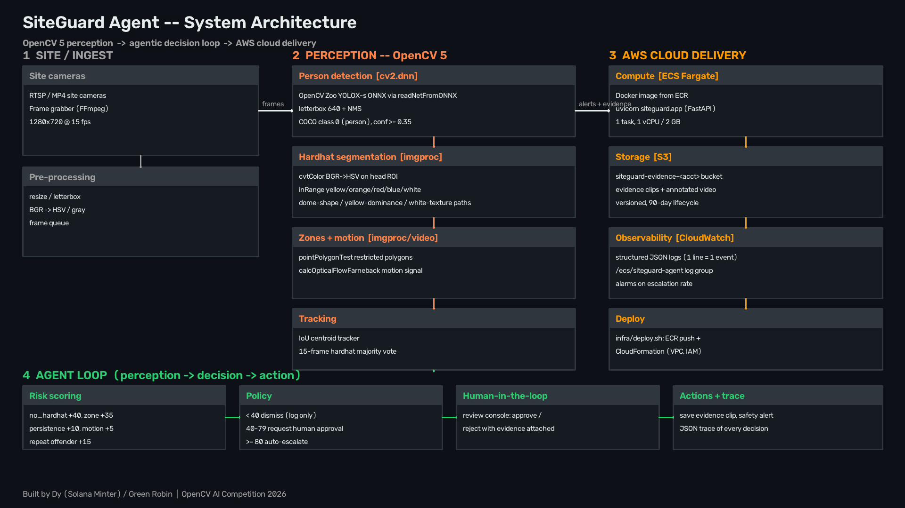

Agentic Vision · OpenCV 5 · AWS
Cameras watch. SiteGuard reasons.
An agentic safety monitor for construction sites. OpenCV 5 detects every worker, checks hardhats, zones and motion — then an agent loop weighs the evidence, requests human approval for the gray areas, and auto-escalates only when risk is high. Later vision can reopen a decision: a hardhat appearing withdraws a pending alert.
Real output, not a mockup
The pipeline, running
27 seconds of the actual SiteGuard vision pipeline: YOLOX-s person detection (OpenCV Model Zoo), classical-OpenCV hardhat segmentation, zone intrusion, tracking — with the agent's live risk decisions overlaid.
Full 4-minute narrated demo with architecture and evaluation: Full 4-minute narrated demo on YouTube. The clip above is rendered by the real pipeline — every box and label is computed, not drawn by hand.
End-to-end walkthrough
From pixels to a decision
- 1 · Detect. YOLOX-s (OpenCV Model Zoo, Apache 2.0) finds every person
via
cv2.dnn— official Zoo preprocessing, anchor-free decode, batched NMS. - 2 · Check PPE. A classical OpenCV hardhat classifier segments the head ROI in HSV: saturated helmet hues, yellow-dome dominance, and a white-dome path with Canny brim texture. No learned PPE model, no GPU required.
- 3 · Zones & motion. Point-in-polygon restricted-zone tests plus dense Farneback optical flow for activity level.
- 4 · Track. An IoU centroid tracker keeps identities across frames and accumulates hardhat votes, zone persistence and violation history per track.
- 5 · Decide — and re-decide. The agent scores risk: below 40 is dismissed, 40–79 requests human approval, 80+ auto-escalates. Crucially, later vision reopens earlier decisions: a hardhat appearing withdraws a pending request; persistent violations or zone entry escalate it.
Interactive evidence
Results explorer
Real detections, the real agent-loop trace, and the real evaluation numbers — all computed by the pipeline, all inspectable below.
Four incidents from the 405-frame demo run. Each card shows the full decision history — including decisions the agent reversed when new vision evidence arrived.
The complete machine-readable trace (640 events: per-frame risk,
votes, zone frames) ships with the repo at
assets/annotated/trace.json.
Curated scenario set
8 hand-labeled scenes · cv2.dnn CPU
Real-world HF set
200 construction photos · CC BY 4.0 · cv2.dnn CPU
Known failure cases
- White hardhat vs. bright sky — merges into one background blob; missed.
- Heavily occluded workers — detector misses shrink coverage.
- Excavator false positive — large machinery occasionally reads as a person.
- Small / distant workers — below the detector's reliable resolution.
Honest scope: the curated set is a pipeline check, not field validation. Latency on CPU averages ~950 ms/frame; a T4 GPU detector benchmark is in progress (see technical report). Production real-time use needs a GPU-enabled build or frame skipping.
System design
OpenCV + AWS architecture

Vision
OpenCV 5 end-to-end: YOLOX-s via cv2.dnn, HSV
hardhat segmentation, Farneback flow, point-in-polygon zones, IoU tracking.
Agent
Risk policy (<40 dismiss · 40–79 human approval · ≥80 escalate) with decision revision: later frames reopen pending incidents.
API
FastAPI: /api/analyze/image,
/api/incidents, /api/trace, approve/reject —
plus a /health endpoint for the load balancer.
AWS
Docker → ECR → ECS Fargate behind an ALB, S3 evidence bucket, CloudWatch JSON logs, CloudFormation with a one-command deploy.
Responsible use
Safety tooling, not surveillance
- Human in the loop by design. Medium-risk incidents require explicit human approval — the agent cannot auto-escalate on ambiguous evidence.
- Decision revision over punishment. New evidence withdraws stale alerts; the system is tuned to avoid false accusations.
- Local-first vision. All analysis runs in the site's own container — no video is sent to third-party vision APIs.
- Evidence & audit trail. Every incident keeps annotated frames and a JSON decision trace, so any escalation can be reviewed after the fact.
- Deployment guidance. Intended for sites with posted camera notices and worker consent processes; operators must follow local labor and privacy law.
About this demo
Pre-computed real outputs
This page presents pre-computed outputs of the real pipeline —
the YOLOX-s weights and OpenCV runtime can't execute inside a serverless function,
so live inference isn't possible here. The production API (FastAPI on ECS Fargate)
exposes the same endpoints; a hosted deployment connects via the
API_BASE_URL environment variable. Everything shown — video frames,
trace events, metrics — was generated by the actual code in the repository.